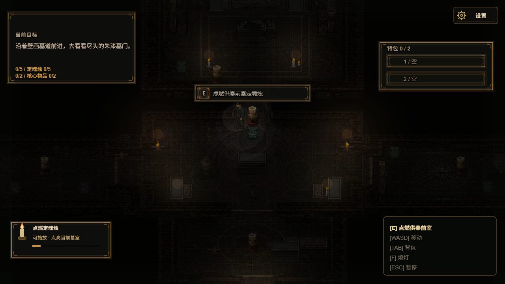

01 / SUPERINK
01 / SUPERINKSuperInk
Unity 6 · C#Draw a weapon. Bring it into the fight.
Solo Technical Designer & Gameplay Programmer
Drawing recognition · Ink economy · Weapon generation
GAMEPLAY + TECHNICAL DESIGN
Computer Science at UW–Madison. I design and build game systems that connect player input, readable feedback, and meaningful choices.
Watch the game. Explore the decisions.
01 / SUPERINKDraw a weapon. Bring it into the fight.
Solo Technical Designer & Gameplay Programmer
Drawing recognition · Ink economy · Weapon generation

02 / ONE MORE RELICExplore. Recover. Decide when to leave.
Solo Developer & Technical Designer
Encounter states · Directed lighting · Exploration choices
ABOUT THE DESIGNER
I study Computer Science at the University of Wisconsin–Madison, with an expected graduation in May 2028. My independent projects focus on gameplay systems, interaction, and rapid prototyping.
My background also includes a software engineering internship at AiFin Sphere and the Tencent Games Opening Lesson game-planning program.
Let’s talk about games and the systems behind them.
zhengyimo882@gmail.com ↗